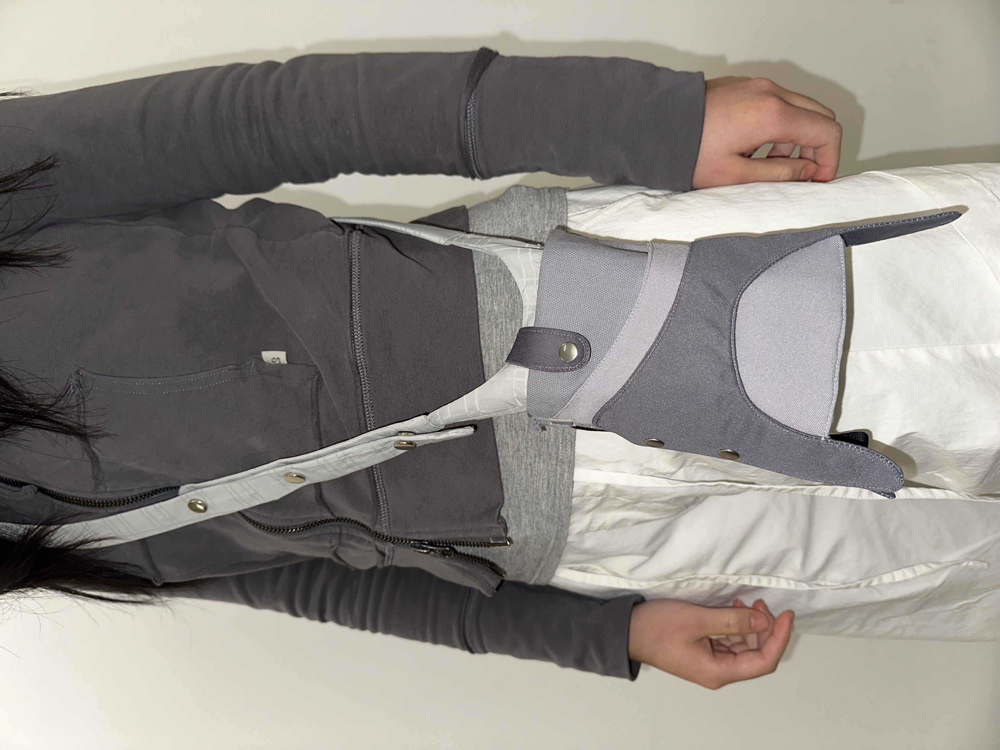
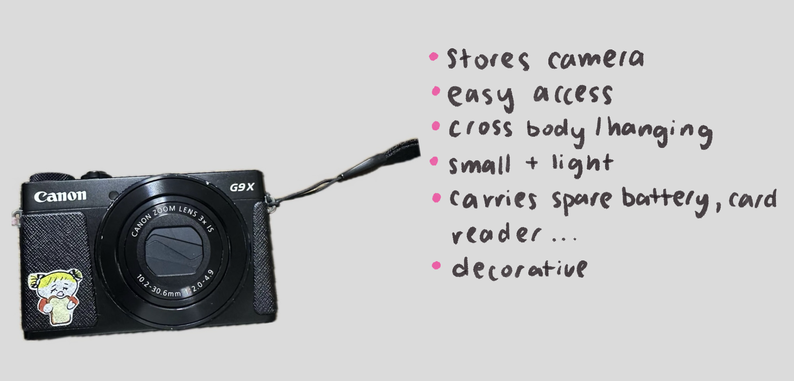
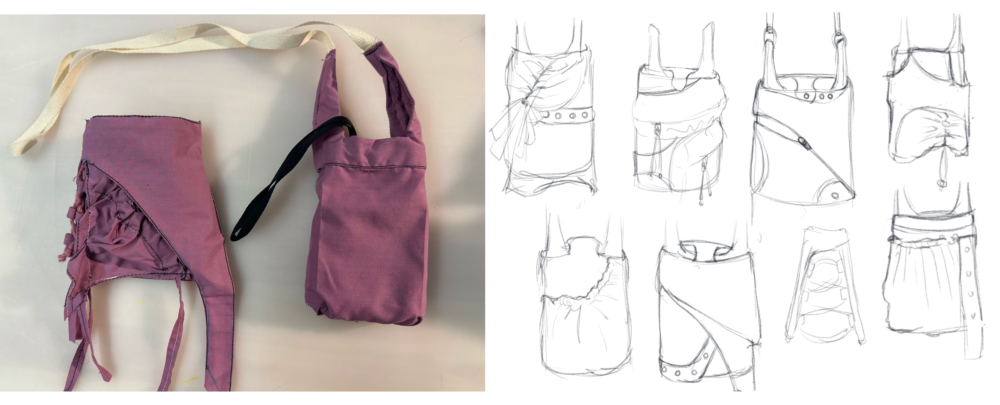
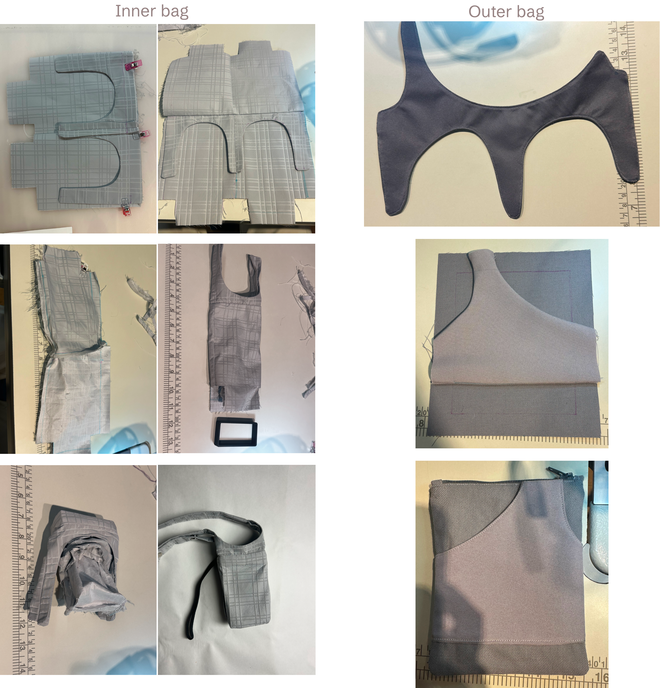
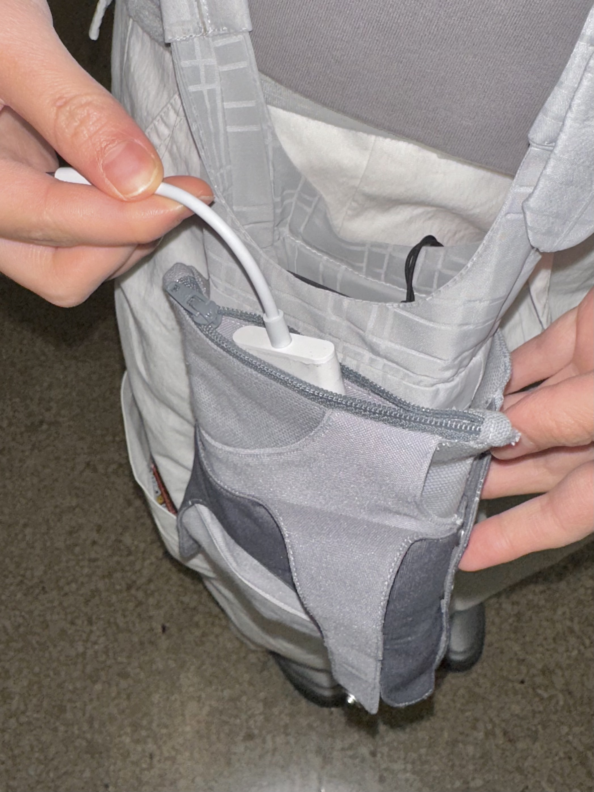
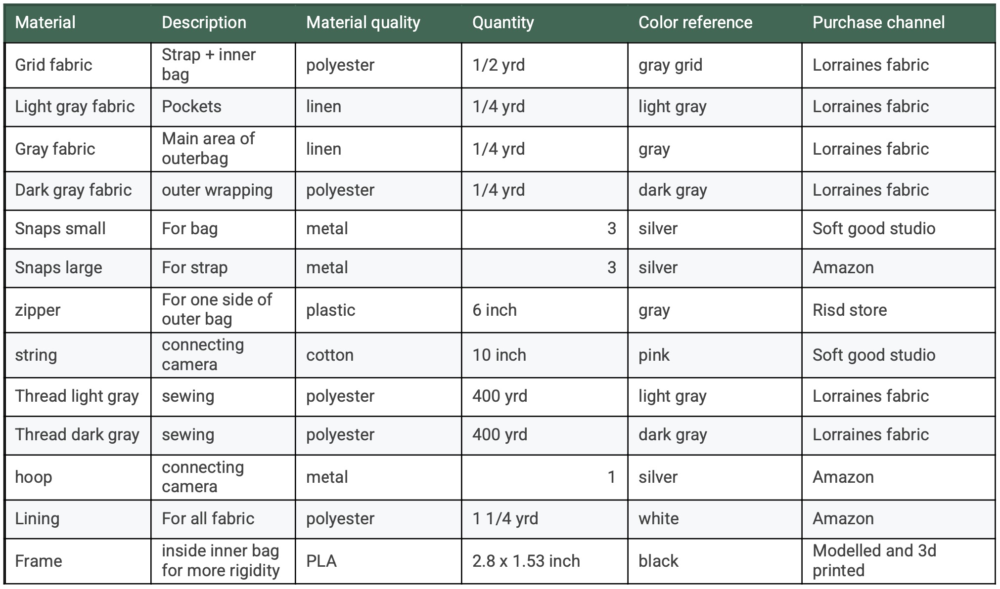
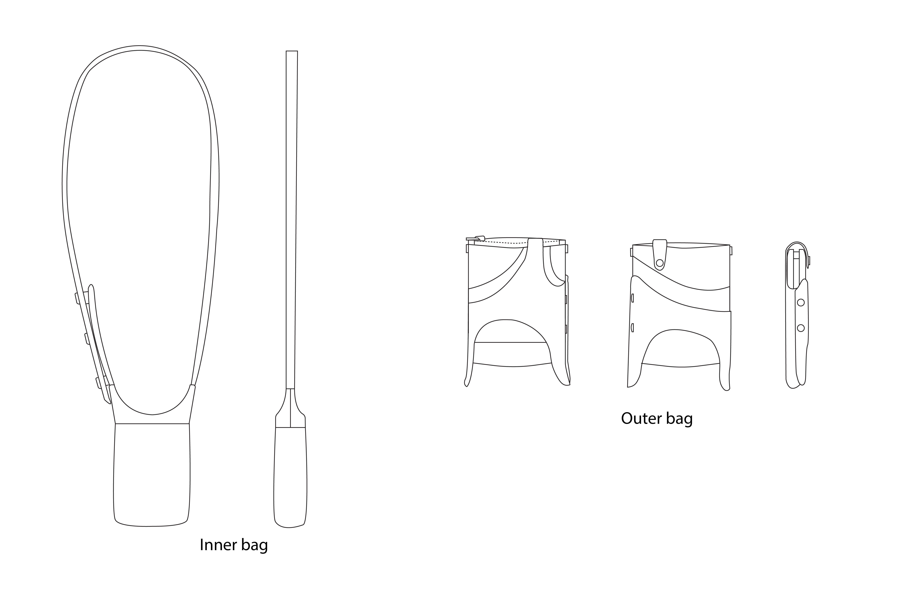
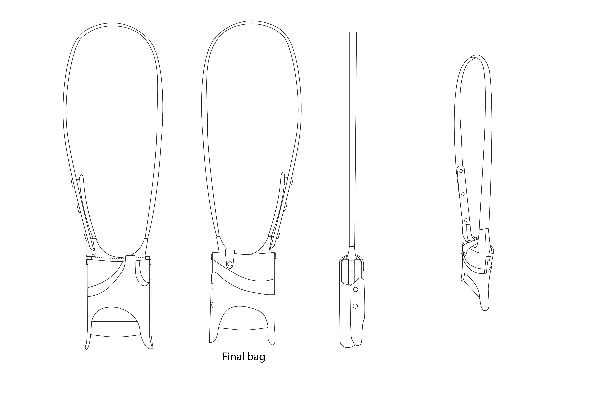
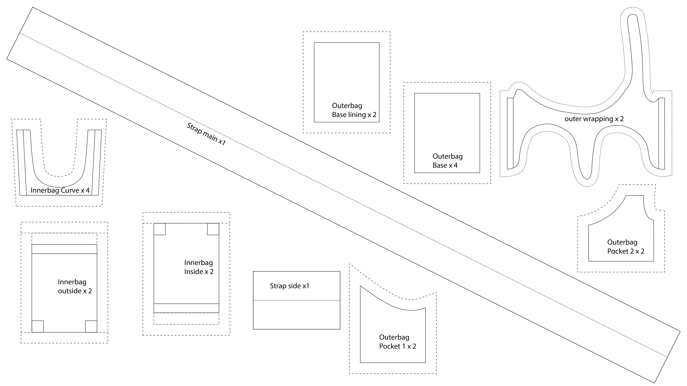

Camera Bag
Fall 2025
Challenge:
Traditional camera bags are often bulky, utilitarian, and slow to access, making them inconvenient for casual outdoor wandering where quick camera use and lightweight carrying are important.
Design:
Designed a lightweight camera bag that functions as both a practical carrier and a decorative wearable. A two-part structure separates the camera from an outer storage compartment, allowing flexible organization. The camera hooks securely to the inner bag to prevent accidental dropping while enabling quick removal and return during use. The bag was developed over four weeks through iterative making, with all materials and hardware self-sourced.
Outcome:
Creates a more efficient and visually appealing way to carry a camera, supporting spontaneous photography while maintaining comfort, security, and aesthetic wearability.

Initial criteria

Ideation through sketching

Prototyping


Process

Final product

Different arrangements

Hook on feature

Assembly


Bill of materials

Orthographic drawing and techpack


